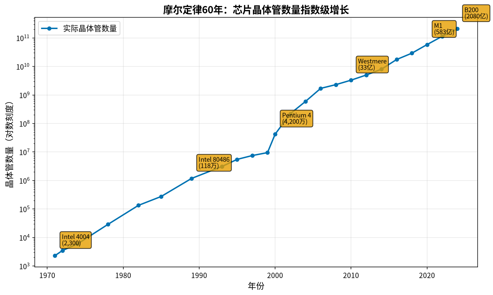
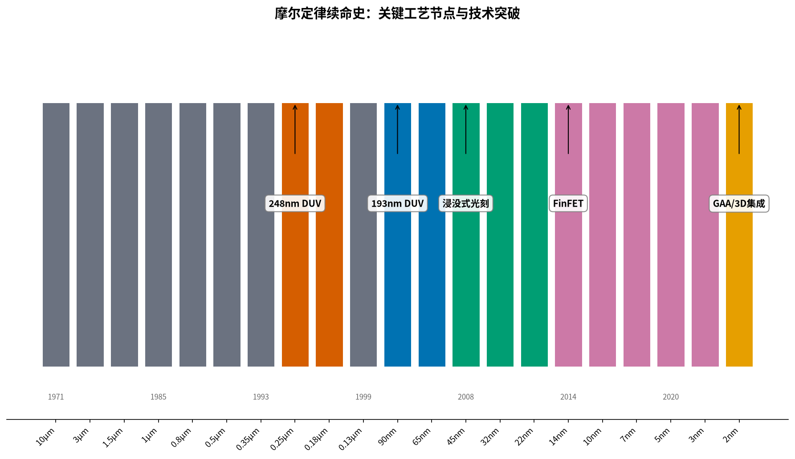
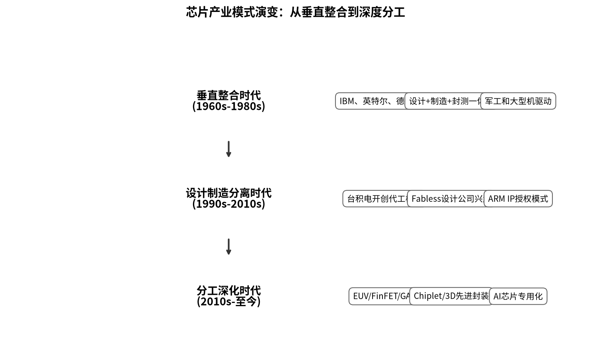

从晶体管到AI芯片，60年创新史背后的因果逻辑
《芯片简史》不是一本按时间线罗列技术发明的编年史，而是一部以"创新即叛逆"为核心命题的思想史。作者汪波将芯片60多年的发展史编织成一条环环相扣的因果链条——从量子力学到晶体管，从集成电路到摩尔定律，从垂直整合到代工模式，每一次突破都不是天才的灵光一现，而是特定历史条件下的必然产物。
本书的最大价值不在于技术细节的堆砌，而在于揭示了技术创新背后的三条因果主线：需求牵引与技术基础的共振、每一次"死亡宣告"催生新的突破、产业组织形态决定技术扩散速度。对于IT基础设施从业者而言，理解芯片发展的底层逻辑，能帮助我们更深刻地预判算力、网络、存储的演进方向。
所有重大突破都始于对主流的偏离。MOS被贝尔实验室判死刑却成主流，闪存被断言"毫无用处"却催生万亿市场。
不是物理定律，而是产业协同的信心定律。整个产业链围绕"两年翻一番"的节奏协同前进，自我实现。
从贝尔实验室到仙童，从英特尔到台积电——每次产业格局剧变的核心都是组织模式的变革，而非单一技术突破。
芯片史上每一个改变世界的发明，在诞生之初都不被看好。晶体管的发明者巴丁和布拉顿最初研究的根本不是放大器；基尔比在德州仪器被孤立，用锗材料焊出第一块集成电路时没人看好；MOS场效晶体管被贝尔实验室判了死刑，却在20年后成为芯片的主流；浮栅晶体管被断言"毫无用处"，最终催生了万亿美元的闪存市场。
创新是对主流的偏离、对现有规则的破坏，它刚开始可能非常蹩脚、很难融入主流。几乎没有一项重大创新一出现就广受欢迎。虽然人们口口声声地说要创新，但其实人们更喜欢的是改良，它的效果立竿见影，因而大受欢迎。
这个规律的现实意义在于：判断一项新技术的潜力，不要看它当下的性能价格比，要看它的改进速度。新技术刚出现时往往更贵、更慢、更差，但它的改进速度是指数级的；旧技术虽然成熟，但改进空间有限。
摩尔定律之所以能持续半个多世纪，不是因为它是自然法则——而是因为它成了整个产业的共同预期和自我实现的预言。设计公司知道两年后会有新一代工艺，所以提前规划下一代产品；设备厂商知道两年后需要精度更高的设备，所以提前投入研发；代工厂知道客户会需要新工艺，所以提前建生产线。


正如汪波在访谈中所说："摩尔定律也是一个关于人的信心和希望的定律，只要人类心中还有这两样东西，摩尔定律的脚步就不会停下。"
过去60年，芯片的核心矛盾是"能在多大的芯片里塞下多少晶体管"——这是空间维度的竞争。但当晶体管尺寸逼近原子级物理极限，竞争的重心正在转向时间维度：完成一次计算需要多长时间？
这个范式转移对IT基础设施的影响深远：存算一体、CXL内存池化、Chiplet先进封装、3D堆叠、光互联——这些"时间维度"的技术正在取代"空间维度"的工艺缩小，成为新的增长引擎。AI大模型时代，GPU之间的通信带宽和延迟已经成为决定集群训练效率的关键因素——这正是"时间缩微"范式的体现。
巴丁和布拉顿在贝尔实验室发明点接触晶体管。因果：真空管走到极限+二战雷达研究积累了半导体材料基础+贝尔实验室瞄准电话交换系统需求
基尔比（锗）和诺伊斯（硅+平面工艺）分别发明集成电路。因果：晶体管数量增加导致"数字暴政"可靠性危机+平面工艺提供量产基础+军事航天需求驱动
戈登·摩尔用4个数据点画出60年曲线。因果：芯片集成度逐年提升的趋势显现+产业需要共同预期来协调发展节奏
肖克利的八名弟子出走创办仙童→诺伊斯摩尔再创办英特尔。因果：独裁管理导致人才流失+硅谷创业文化与风投模式成型+知识外溢形成产业集群
张忠谋创办台积电，芯片产业从垂直整合走向设计制造分离。因果：建造成本飙升使垂直整合难以为继+大量设计公司需要制造服务+台湾产业政策支持
林本坚的浸没式光刻+胡正明的FinFET，让摩尔定律延续了整整10代工艺。因果：193nm光刻和平面晶体管先后到达物理极限+工程师创造力突破瓶颈
AI浪潮推动GPU从游戏显卡跃升为算力基石。因果：CPU通用计算架构不适合AI并行计算+大模型训练需要万卡集群+专用计算芯片时代到来

每一代工艺进步带来算力提升，但芯片间通信速度增长较慢——"IO墙"问题日益突出。AI大模型训练中，大量时间花在梯度同步上，网络带宽和延迟直接决定集群效率。网络从"辅助设施"变成"算力的一部分"——800G以太网、InfiniBand、RoCE成为AI集群的必选项。
Chiplet架构让"大芯片"由多个小芯片拼成，先进封装的价值占比越来越高。服务器内部总线（PCIe 5.0→6.0→7.0、CXL 2.0→3.0）快速升级，内存池化和共享成为可能——这会改变服务器之间的内存交互模式，对网络延迟和带宽提出新要求。
不同制程节点的供应链风险完全不同：28nm及以上成熟制程国产化程度高、风险低；14nm/7nm有一定风险；5nm/3nm基本依赖台积电，地缘政治风险高。方案设计中需要建立"制程代际"意识，为不同层级的系统设计不同的供应链韧性策略。
数据中心电力供应和散热能力正在成为扩建的主要限制因素。先进制程芯片的单位算力功耗更低，对电力紧张的老旧机房尤其有价值。选型时不能只看采购成本，要算3-5年的TCO（总拥有成本）——电费可能超过硬件成本。
《芯片简史》不是一本只读一遍的书。它表面上讲的是芯片的历史，实际上讲的是创新的规律——为什么重要的技术总是以出人意料的方式出现？为什么最成功的公司往往不是发明者？为什么产业格局会从一个形态演变为另一个形态？
对于一个面向未来的IT工程师来说，理解这些规律比记住几个技术参数重要得多。因为参数会过时，工艺会迭代，产品会更新——但创新的逻辑、产业的规律、历史的教训，会在每一个技术浪潮中反复重现。
芯片竞争正在从"空间缩微"转向"时间缩微"，而我们这个行业——网络、计算、存储的基础设施——恰恰站在"时间缩微"的最前线。理解了芯片发展的因果逻辑，你就能更好地理解为什么网络越来越重要、为什么存算一体是方向、为什么生态比参数更关键。
摩尔定律故事：摩尔当年只用了四个数据点就画出了一条60年的曲线——这本身就是一个很有戏剧性的故事。摩尔定律不是物理定律，是产业协同和信心的定律——这个观点很新颖，能引发讨论。
创新者的窘境：新一代技术刚出现时往往在关键指标上不如老一代，但它有改进速度的优势。可以用来解释国产芯片、AI芯片等"反直觉"的技术选择。
代工模式类比：台积电的代工模式启示——专业化分工比垂直整合效率更高。类比到IT基础设施：云服务=计算代工，NaaS=网络代工，超融合=芯片级集成。